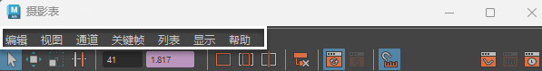

“摄影表”(Dope Sheet)菜单

“摄影表编辑器”(Dope Sheet Editor)菜单栏
“摄影表编辑器”(Dope Sheet Editor)菜单栏包含用于在“摄影表编辑器”(Dope Sheet Editor)的
视图区域
中操纵关键帧的工具和操作。
提示：
按
Shift
+
M
可显示或隐藏菜单栏。
本节内容
“摄影表”(Dope Sheet)的“编辑”(Edit)菜单
“摄影表”(Dope Sheet)的“视图”(View)菜单
“摄影表”(Dope Sheet)的“通道”(Channels)菜单
“摄影表”(Dope Sheet)的“关键帧”(Keys)菜单
“摄影表列表”(Dope Sheet List)菜单
“摄影表”(Dope Sheet)的“显示”(Show)菜单
“摄影表”(Dope Sheet)大纲视图上下文菜单
父主题：
摄影表编辑器(Dope Sheet Editor)